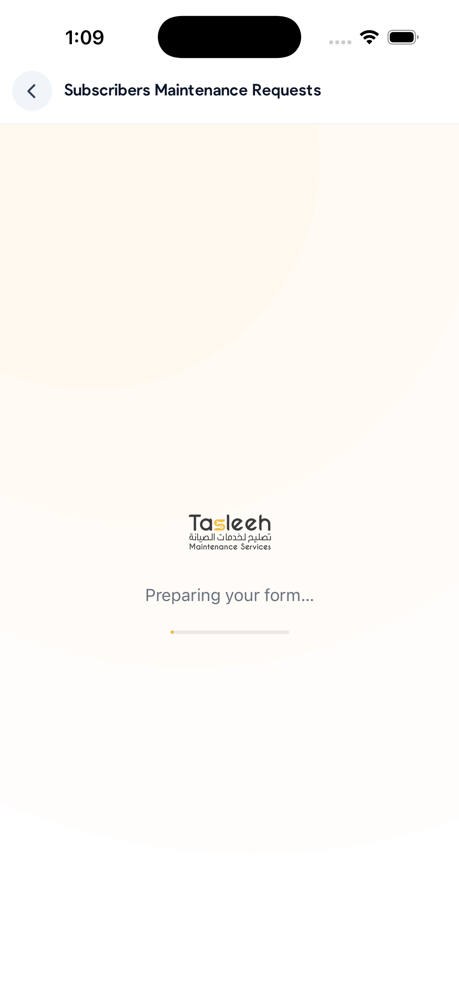

Almost every failed integration fails in one of a dozen ways, and nearly all of them are
configuration rather than code. This page is ordered the way a real investigation goes: four
commands that identify the problem, then the setup mistakes that cause most first-run failures,
then local-development networking, then every error code the SDK can raise and what to do about
each one.
Start here: four checks
Run these before reading anything else. Between them they identify the cause of most support
tickets, and their output is what we will ask for if you open one.
Is the manifest really a manifest?
The SDK fetches {baseUrl}/embed/manifest.json before it renders anything. It
must be JSON, not the SPA shell.
text/html means the single-page-app catch-all answered — the manifest is not
deployed, or your baseUrl is missing the deploy path prefix. A 404
means the prefix is wrong. Either way you will see manifestFailed in the app.
Does the embed route work in a desktop browser?
Every embed route can be driven without a native host, against a portal built with the
development mock enabled:
https://portal.example.com/portal/embed/form/external/1234?mockEmbed=1# authenticated, and with the runtime settings the bridge would have sent:
…?mockEmbed=1&mockToken=<jwt>&mockBranch=12&mockLocale=ar&mockTheme=dark&mockFontScale=1.2&mockPlatform=android
If the form is broken there too, the problem is portal-side and no amount of SDK
configuration will fix it. Without mockToken the session is anonymous.
Turn on SDK logging
Set enableLogging in your config (keep it development-only). Every line is
prefixed [AmthalPortal] and covers the manifest result, blocked navigations,
dropped cross-origin messages and the portal's own log messages. It is
build-gated, so it is inert in release builds — __DEV__ on React Native,
#if DEBUG on iOS, the debuggable flag on Android.
Read the error message, not just the code
Every PortalError carries a message that says which gate failed — which
protocol version the portal speaks, which version bound was violated, which HTTP status came
back. httpStatus is populated for httpError and for a non-2xx
manifest fetch. Log the whole object in development; show the user something calm.
The five common setup mistakes
If you read one thing on this page:baseUrl must include the
portal's deploy path prefix. The portal ships with <base href="/portal/">,
so the correct value is https://portal.example.com/portal — not
https://portal.example.com.
A blank form, or the user lands in Safari/Chrome the moment it opens
Cause.baseUrl is missing the path prefix. Navigation
confinement is computed as base path + /embed. With an empty base path the
portal's own very first in-app navigation looks like it leaves the allowed subtree, so the SDK
cancels it and hands the URL to the system browser — which is exactly what you would want it to
do for a genuinely external link.
Fix. Add the prefix. A trailing slash is tolerated; a query string is not
(Android rejects one at construction time, the other hosts ignore it).
baseUrl: 'https://portal.example.com/portal' // ✅
baseUrl: 'https://portal.example.com' // ❌ blank screen or a trip to the browser
baseUrl: 'https://portal.example.com/portal/' // ✅ tolerated
baseUrl: 'https://portal.example.com/portal?x=1' // ❌ never
manifestFailed immediately, nothing renders
Cause.{baseUrl}/embed/manifest.json returned HTML (the SPA
catch-all), a 404, or nothing at all. This is the single most common first-run failure and it is
usually the same missing prefix as above.
Fix. Check 1 in the triage list. If the URL is right and the content type is
right, the portal build does not ship the embed manifest — ask for a portal deployment that
does. The manifest is fetched from the full base URL, never from the bare origin.
npm install fails with 401 on @amthal-group/*
Cause. The packages are published to GitHub Packages. A missing, expired or
under-scoped token gets a 401 — there is no anonymous read.
Fix. A classic personal access token with the read:packages
scope, in ~/.npmrc:
Verify with npm view @amthal-group/portal-react-native version — it should print
1.0.0. Two things that surprise people: working from a checkout of the SDK monorepo
needs no token at all (npm install at the repo root resolves the bridge
through npm workspaces, then npm run build once), and Android consumers need the
same token again as Gradle properties gpr.user / gpr.key for
https://maven.pkg.github.com/Amthal-Group/amthal-portal-sdk.
A signed-in submission never appears in the customer's history
Cause. The request's type was not the literal string
'internal'. The portal compares it against that exact value; anything else
('external' by convention) goes down the public plane, where the application is
filed against an anonymous stand-in. The submission succeeds — there is no error
anywhere — which is what makes it expensive to find.
Fix. Pass type: 'internal' for a signed-in user, and
'external' only for genuinely public forms.
Android hardware back does nothing, or leaves the screen without asking the form
Cause.React Native Without
onCloseRequested the wrapper installs no back handler at all, so the platform
default applies and the form never gets the chance to step back through its own wizard.
Fix. Pass onCloseRequested. It is optional in the type
signature and effectively required in practice. If you also opted into predictive back
(android:enableOnBackInvokedCallback), confirm BackHandler still fires
on your React Native version.
Local dev: emulators, simulators, dev certificates
Production integrations rarely hit these. Every team building against a laptop-hosted portal
hits all of them, usually in the same afternoon.
A bare "Network Error" on the Android emulator is your development certificate
Symptom. Your own API calls (login, refresh) fail with
Network Error from axios or Network request failed from
fetch — no status, no body, no detail — and the SDK reports
manifestFailed or loadFailed for the same host. The identical URL works
in your laptop's browser and on the iOS simulator.
Cause. Android's networking stack (OkHttp, under React Native's
fetch and axios alike) validates the TLS chain and has no interactive prompt. A
self-signed development certificate — the ASP.NET Core dev cert, or ng serve --ssl's
generated one — has no trust anchor on the device, so the handshake is refused before any HTTP
happens. macOS and iOS trust it because you clicked "always trust" in Keychain once; the emulator
never saw that.
Fix, in order of preference.
Use the plain-HTTP development port. Serve the portal and the API over
http:// locally and set allowInsecureHttp (iOS spells it
allowInsecureHTTP) alongside a scoped cleartext permission. This is the least
fragile option and it is what the flag exists for.
Or install the certificate as a user CA and trust it in a debug build.
Pushing the PEM to the emulator and installing it under Settings is only half the job: since
API 24, apps do not trust user-added CAs unless they say so. You need a debug-only network
security config with <certificates src="user"/>.
app/src/debug/res/xml/network_security_config.xml — cleartext for a dev host, and
user CAs trusted, both scoped to debug builds only:
On Expo, the equivalent cleartext switch is
["expo-build-properties", { "android": { "usesCleartextTraffic": true } }] — keep it
out of production builds.
You cannot click through a bad certificate in the SDK's WebView. The
hardened WebView installs no SSL-error override, so an untrusted certificate cannot be accepted
at runtime the way a browser lets you. It fails as loadFailed and stays failed.
That is deliberate, and it is also why the two fixes above are the only two fixes.
Related, and often confused with it: Android's certificatePinner hook applies
only to HTTPS the SDK itself performs — the manifest fetch and downloads. It does not and
cannot pin the WebView's page load.
The Android emulator ignores your laptop's /etc/hosts
Symptom. You added 127.0.0.1 tenant.dev.local to your Mac's
hosts file, the browser on your Mac resolves it, and the emulator cannot: Chrome inside the
emulator shows ERR_NAME_NOT_RESOLVED and the SDK reports offline (the
WebView maps host-lookup failures to that code).
Cause. The emulator is a separate machine with its own resolver. Your host's
/etc/hosts means nothing to it, and its own copy is on a read-only system image.
This matters more than it sounds, because the portal and the Core API often derive the tenant
from the request host — so "just use the IP" changes which tenant you are talking to.
Fix. Give Chromium a resolver rule. Both Chrome and the system WebView read a
command-line file, and --host-resolver-rules maps a name to an address without
touching DNS. 10.0.2.2 is the emulator's alias for your development machine.
adb root # needs a Google APIs (non-Play-Store) system image# the system WebView — this is what the SDK renders inadb shell "echo '_ --host-resolver-rules=\"MAP tenant.dev.local 10.0.2.2\"' \
> /data/local/tmp/webview-command-line"
# Chrome, for testing the same URL by hand in the emulator's browser
adb shell "echo '_ --host-resolver-rules=\"MAP tenant.dev.local 10.0.2.2\"' \
> /data/local/tmp/chrome-command-line"
adb shell am force-stop com.android.chrome
The leading _ is a placeholder: Chromium discards the first token as the program
name. Restart the app (and Chrome) after writing the file. On a Play-Store system image
adb root is unavailable — use http://10.0.2.2:<port> directly, or
point the emulator at a DNS server that resolves the name
(emulator -dns-server …).
Two related shortcuts worth knowing: adb reverse tcp:4200 tcp:4200 makes
localhost:4200 on a physical device reach your laptop, and both the React
Native and Android hosts accept 10.0.2.2 as a loopback address, so a plain-HTTP base
URL on that host needs no allowInsecureHttp at all.
Everything works in debug and the portal refuses to open in release
Cause. The insecure-HTTP hatch is compiled or gated out of release builds on
every platform, by design. React Native fails with loadFailed and "Insecure baseUrl
rejected"; iOS throws PortalConfigError.insecureBaseURL out of
PortalConfig.init; Android's PortalConfig constructor throws
IllegalArgumentException and logs that the flag was ignored.
Fix. Point release builds at an HTTPS portal. There is no production escape
hatch and there will not be one.
Every error code, and what to do about it
The codes are a closed set of eight, identical on all four hosts. React Native and Expo
deliver them as PortalErrorInfo { code, message?, httpStatus? }, iOS as
PortalError (with code.httpStatus and code.rawValue),
Android as PortalError(code, message, httpStatus).
Code
What actually happened
What to do
offline
The device has no usable network, or the name did not resolve. React Native maps URL
error -1009 and descriptions matching
ERR_INTERNET_DISCONNECTED / ERR_NAME_NOT_RESOLVED; Android maps
the WebView's ERROR_HOST_LOOKUP, ERROR_CONNECT and
ERROR_TIMEOUT; iOS maps the offline family of NSURLErrorDomain
codes — including on the manifest fetch, where the other hosts would say
manifestFailed.
Show a retry affordance. iOS and Android retry automatically when connectivity returns.
If it fires on a working connection, it is name resolution: see the emulator hosts section
above.
loadFailed
Any page-load failure that is not one of the above, plus the configuration refusals: an
unparseable baseUrl, an insecure baseUrl in a release build, and
on iOS a portal URL that could not be composed. On the Expo sheet, every
presentation rejection is reported as loadFailed.
Read the message. An untrusted TLS certificate lands here on Android; so does asking
the Expo sheet for form delegation, which it does not implement.
httpError
The main frame returned a non-2xx status, carried in httpStatus.
Android also reuses this code for download failures and for "no
app available to open the downloaded file".
401/403 means your token never reached the portal — see the session section. 404 means
the route does not exist at that path, which is usually the prefix again.
manifestFailed
The manifest could not be fetched, was not JSON, or timed out (React Native aborts the
fetch at 10 s). A non-2xx fetch carries httpStatus.
Triage check 1. A 404 is the path prefix; text/html is the SPA catch-all;
a timeout means the host is simply unreachable from the device — VPN-only origin, wrong
port, or an emulator that cannot resolve the name.
bridgeTimeout
The page finished loading but the portal's bridge shim never said
hello within 15 seconds.
You are on a page that is not an embed route — a login screen, a 404 shell, or a portal
build without embed mode. Open the same URL with ?mockEmbed=1 in a desktop
browser: if it hangs there too, it is portal-side.
versionIncompatible
One of three gates failed before anything rendered: the manifest's
bridgeProtocolVersion is not 1; the portal is older than your
minPortalVersion; or the SDK is older than the manifest's
minSdkVersion. The message names which.
Upgrade the SDK, lower minPortalVersion, or ask for a portal deployment on
the matching protocol. Surface it to the user as "please update the app" — it is the one
code that is never retried automatically, because retrying cannot help.
authExpired
The portal's own token refresh failed and it paused, waiting for fresh credentials from
you. Not a network failure.
Hand back a new token — see below. Note the routing differs per host: React Native
calls onAuthExpired if you supplied it and falls back to
onError if you did not; the Expo sheet only raises the
onAuthExpired event; iOS and Android raise it through the error channel as
well as showing their session-expired interstitial.
webProcessTerminated
The web content process died — usually memory pressure with a large attachment. The SDK
reloads once by itself and only raises this code if the process dies a second time.
Offer a reload. If it is reproducible, capture the form and the attachment sizes and
send them to us; a deterministic renderer crash is a portal bug.
If you do not supply a custom error view, the React Native wrapper shows these titles, so you
may recognise them from a screenshot: "No internet connection.", "The portal could not be
loaded.", "The portal returned an unexpected response.", "The portal could not be reached.",
"The portal did not respond in time.", "This app version is not compatible with the portal.
Please update the app.", "Your session has expired.", "The portal view stopped unexpectedly."

The SDK's own loading screen. If it never goes away, nothing has failed yet —
you are waiting on the manifest, the page load, or hello. After 15 seconds
without hello it becomes bridgeTimeout. A splash that persists
past that without an error usually means the error callback is not wired.
Sessions, tokens and 401s
authExpired fires and the session never resumes
Cause. The refresh handed back nothing, or handed back the wrong field. The
portal stays paused until it receives an auth message, and the SDK's "refreshing
your session" overlay stays up until the web acknowledges it (or the 10-second round trip times
out).
Fix. Always complete the handshake — call the refresh function
React Native hands you, or the handle's updateAuth, or the equivalent on iOS,
Android and the Expo session. They are the same code path. Check which property of your
authentication response actually carries the new token before you assume it is
token.
onAuthExpired={async(refresh,reason)=>{constnext=awaitmyAuth.refreshSession();// your backend, your callrefresh({token:next.token,branchId:next.branchId,user:next.user});}}
Two behaviours worth knowing on React Native: changing the auth prop to a
different, non-empty token after the bridge is up re-sends it automatically, and swapping one
anonymous shape for another sends nothing at all.
A public form returns 401 on every request
Cause. A token from an earlier signed-in session is still in the WebView's
storage. The portal's HTTP interceptor attaches it even to the public endpoints, and the API
rejects a stale token on an anonymous route just as firmly as on a private one.
Fix.React Native Omit the auth prop
entirely. An init message with no auth key is how the portal is told
"public plane", and it clears its stored credentials. Passing { token: '' } is
not the same thing and does not clear anything. On iOS, Android and the Expo sheet the
auth argument is not optional, so the blank-token form is what exists there.
The user stays signed in after logging out of your app
Cause. The portal screen was never torn down, so its session outlived your
app's. The SDK sends destroy on unmount, the portal clears its persisted auth, and
the native hosts clear WebView storage best-effort — but none of that happens if the screen is
still mounted.
Fix. Unmount the portal screen (or call destroy /
dismiss) as part of your logout, and discard your own stored token. Store tokens in
Keychain, Keystore or expo-secure-store — never AsyncStorage, never a
file, never a log line.
Platform-specific gotchas
React Native
Downloads that need a header silently fail. The default fallback opens
the URL with Linking.openURL, which cannot attach the
headers the portal supplied. Implement onDownloadRequest and
download it yourself.
External links go the wrong way.onOpenExternal must
return trueonly when you handled the URL. Return false
(or omit the prop) to let the SDK open it.
brandColor appears to do nothing. Only
#rgb, #rrggbb and #rrggbbaa are accepted; anything
else is ignored without a warning. It tints the SDK's own splash and retry button, nothing
inside the form.
The WebView's originWhitelist is not the security boundary.
Confinement is the configured origin plus the /embed subtree, enforced
separately. Do not "tighten" the whitelist and expect it to change anything.
Expo
It is Apple-only. The native sheet module declares the Apple platform
alone. On Android, use the inline React Native component.
Expo Go cannot work — both paths contain native code. Use a
development build or a prebuild.
onFormOp is not supported. Passing it fails fast through
onError with loadFailed and returns a no-op session. Delegated
forms need the inline component.
There is no brandColor here. The sheet always uses the
platform default tint for its interstitials.
onSubmitted drops raw when the result
crosses to JavaScript, even though the type declares it. Use the identifiers.
"Already presented" / "no presenter" rejections surface as
loadFailed; only one sheet can be up at a time.
iOS
The flag is spelled allowInsecureHTTP here — capital
HTTP — and unlike the other hosts it is a throwing initialiser: a bad or insecure base URL
throws PortalConfigError out of PortalConfig.init rather than
reaching a callback.
Plain HTTP also needs an ATS exception in Info.plist
(never NSAllowsArbitraryLoads, and never in a shipping build).
Attachments need usage strings. Without
NSCameraUsageDescription / NSPhotoLibraryUsageDescription iOS
terminates the app the moment the picker opens.
No release tag exists yet. Swift Package Manager must resolve the
repository by branch (branch: "main"); a version requirement cannot resolve
until the first tag is pushed.
Android
File pickers do nothing on a bare view host.AmthalPortalView needs an activity-result launcher — call
attachActivityResultRegistry(...) (or
attachActivityResultCaller(...) from a Fragment, before creation). The
provided Activity and Fragment hosts wire it for you.
start() may be called once per view instance. Calling it
twice throws IllegalStateException; create a new view for a new session.
The constructor is strict. It throws
IllegalArgumentException for a non-positive fontScale, a URL with
no scheme or host, a non-HTTPS URL that is not loopback or opted in, and — uniquely among
the four hosts — a baseUrl carrying a query string or fragment.
httpError is overloaded on this platform: it also covers
a failed download and "no app available to open the downloaded file". Read the message
before blaming the portal.
What to send us
If nothing above fits, a good report is usually answered in one reply and a vague one costs a
week. Include:
The exact baseUrl string, copied from your config — prefix, scheme and all.
The output of curl -sI {baseUrl}/embed/manifest.json and of
curl -s {baseUrl}/embed/manifest.json from the same network as the device.
The full error object: code, message and httpStatus.
The message is the part that names the failing gate.
The [AmthalPortal] log lines from the failing run, with
enableLogging on.
Host and versions: React Native / Expo / native iOS / native Android, the SDK version, and
the portalVersion from the manifest.
Whether the same ?mockEmbed=1 URL reproduces it in a desktop browser — this
one line decides whether the bug is ours or the portal's.
Never paste a token, a refresh token or a download Authorization header into a
ticket, a screenshot or a log file. The SDK deliberately keeps credentials out of URLs and out
of logs; a support thread is the usual place that guarantee gets broken.